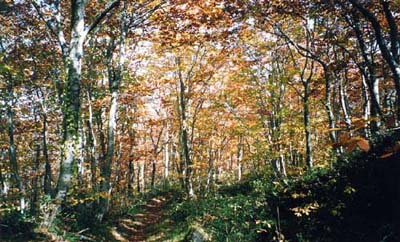

山形道笹谷インターの側の登り口から登る。笹谷峠は宮城と山形を繋ぐ峠であり、太平洋側と日本海側
を結ぶ幹線道路だった。品物を山の向こうで売るために山を登ってきた人、追われて山越えする人、
駆け落ちで山を越えた人、仇を捜して山を越えた人、山菜を探して登ってきた人、マタギも通り過ぎたろう、
ほかにどんな目的でここを登ってきたのだろうなんて思いながら紅葉の雑木林を笹谷峠から再び降りた。
宮城県 笹谷峠

|
|
||||
|
 |
||||